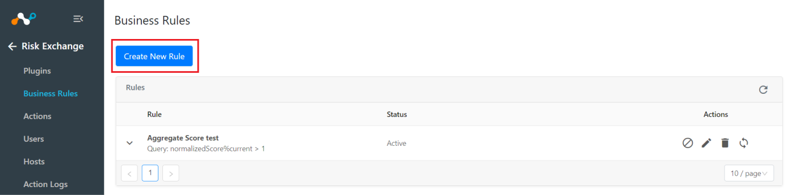
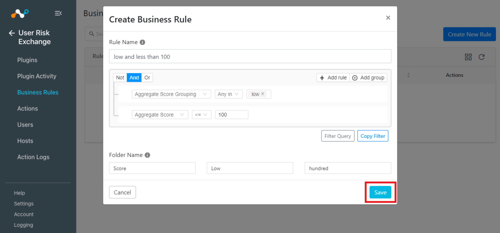
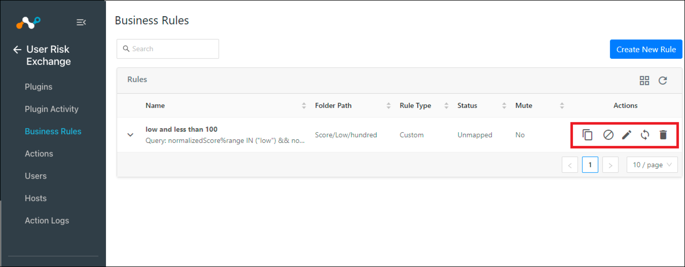
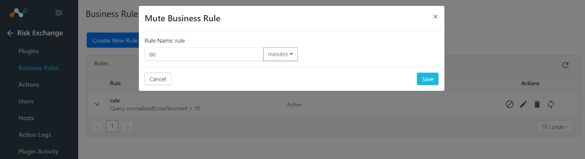
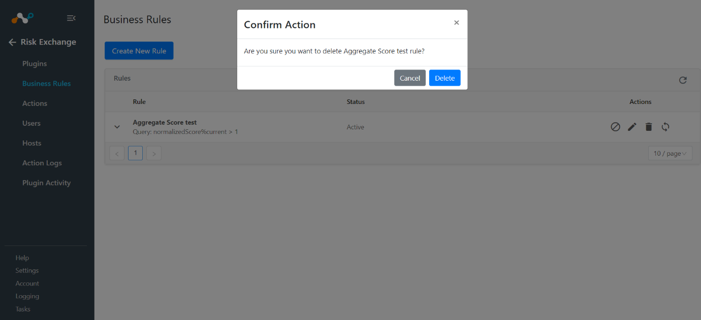
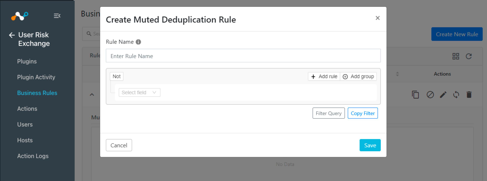
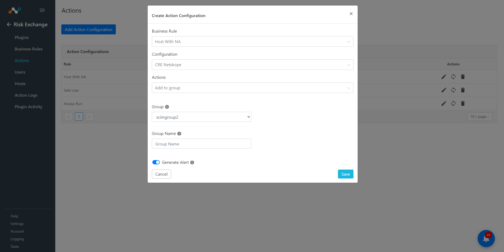

Manage Risk Exchange Business Rules
Only an Admin can manage Risk Exchange Business Rules.
Create Risk Exchange Business Rules
Admins can configure Risk Exchange queries towards users, allowing them to specify which users to take actions upon.
In the Risk Exchange module, go to Business Rules.
Click Create New Rule.
 Enter the rule name.
Select or enter a query in the alert filter. At least one filter must be selected.
Filters can be copied from the alert table and applied to a business rule.
Click Save.

Perform Action on Risk Exchange Business Rules
Users can manage all the business rules from a single place on the platform at the Business Rules page. Admin can mute one or multiple business rules, edit the query for business rules, or delete the business rules or Test the Business Rule from this page.
|  |
Muting a Risk Exchange Business Rule
Muting can be used to temporarily ignore any changes to users or hosts scores that would normally trigger the action workflow.
|  |
Deleting Risk Exchange Business Rules
To delete a business rule, select the Trash icon on the rule and confirm the action.
|  |
Add or Delete Muting Rules to Risk Exchange Business Rules
This function is used to mute known and acknowledged changes to a user or host matching some specific criteria. For example, the admin could mute a particular user so that no new actions are performed for that business rule on that user.
|  |
 |
Mapping a Risk Exchange Business Rule to an Action
Users can map business rules with actions so that when a user or host matches a business rule, the configured action will be performed on the user.
Role required: admin
Go to Risk Exchange > Actions.
Click Add Action Configuration.

Select Business Rule, and then Configuration.
Based on the selected configuration, a list of Actions will be populated. Select an action that you want to map to the business rule.
If the action has some required parameters, user will need to fill those out as well.
 Enable Generate Alert if you would like to receive alerts in the Ticket Orchestrator module whenever an action is performed. Using this feature, user can receive alerts into your ITSM platform or receive notifications when an action is performed on users or hosts. Note that this feature requires that the Ticket Orchestrator module to be enabled.
Click Save.